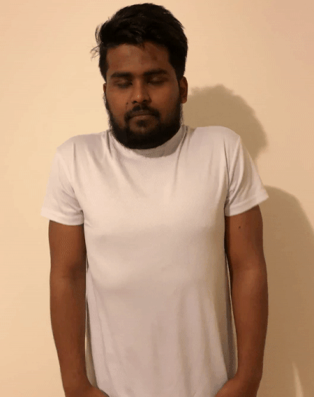
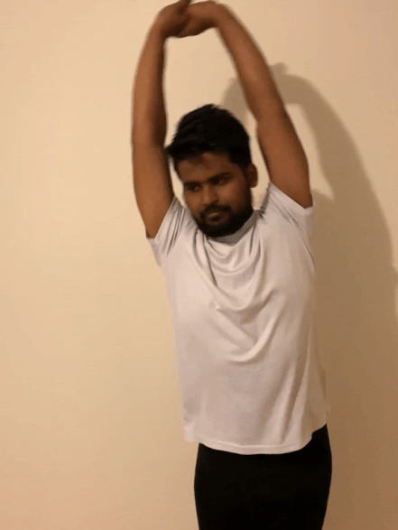
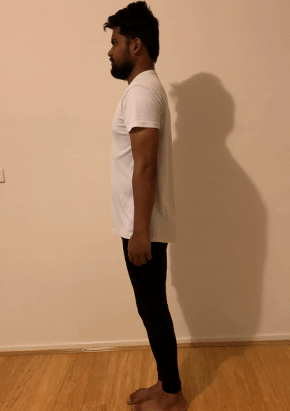
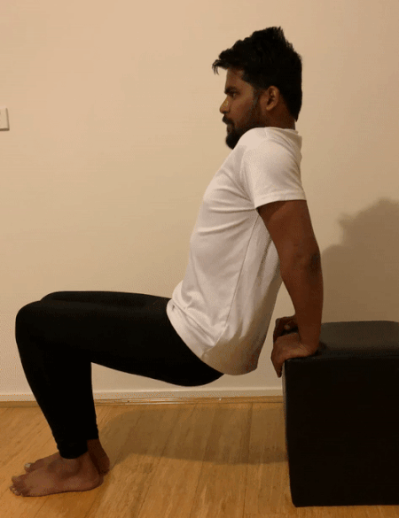
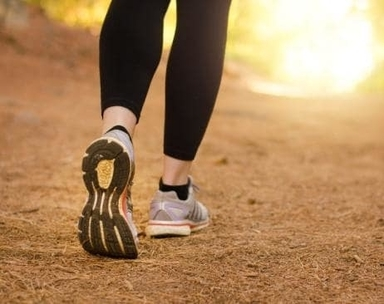
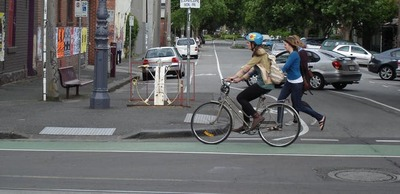
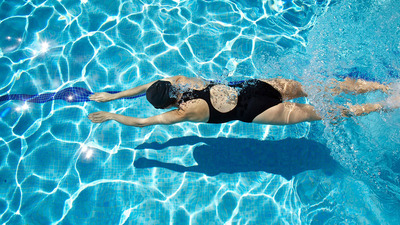

According to the Canadian Center for Occupational Health and Safety (CCOHS), working in a standing position on a regular basis can lead not only to fatigue and lower back pain but can also cause other health problems such as feet pain, swollen legs, and varicose veins.
These recommended exercises can help you to release your pains, strengthen your lower body and build endurance.
Back Pain
Exercise1 : Neck Rolls

Neck rolls: repeat 5 to 10 times in each direction, 3 sets)
- Begin by sitting upright, relaxing your shoulders, and placing your hands on your lap. Carefully lean your right ear over your right shoulder.
- Slowly move your chin down and let it drop toward your chest while keeping your back straight.
- Bring your head up until your left ear is over your left shoulder. Gently roll your head back and around to your right shoulder once more.
- Even out the rhythm, keep your breathing calm and smooth, and repeat 5 to 10 times in each direction.
- The Exercise helps to relax and stretches the neck muscles and the cervical spine.
- Helps to alleviate any discomfort associated with neck strain.
Exercise2 : Shoulder Shrugs

Shoulder shrugs: 30 seconds per direction, 3 sets
- Stand or sit up straight, keeping the arms down by the sides.
- Gently roll the shoulders forward, lifting them up and down in a continuous circular motion. Try to keep the arms relaxed.
- Do this for around 30 seconds, then repeat it in the opposite direction.
- This Exercise is for removing the stress and tension in the shoulders.
- Improve the circulation in the joints.
- This Exercise warms up and stretches the muscles, tendons and maintain stiffness in the shoulder part.
Exercise3 : Overhead Arm Reach

Overhead arm reach: 10 repetitions per side, 3 sets(medicalnewtoday.com)
- Begin in a sitting or standing position.
- Stretch the arms above the head.
- Lean to the right, keeping both arms stretched upward. To deepen the stretch, use the right hand to gently pull the left arm to the right.
- Return to the starting position.
- Repeat the stretch several times on both sides.
- The side stretching help to release the tension from the muscles that attached to ribs.
- The chambers of the heart all get stretched as well, especially in postures such as reclined hero with arms reached overhead.
Knee Pain
Exercise1 : Standing Hamstring Curls

Standing hamstring curls: 2 minutes, 3 sets (medicalnewtoday.com)
Muscles involved: Hamstrings (back of the thigh) and gluteal (buttock) muscles.
- Stand straight with the knees only 1–2 inches apart. Hold on to a stable chair, the countertop, or another object for balance.
- Slowly bend one knee behind the body, lifting the heel off the floor while keeping the thighs aligned. Continue to lift the heel in a smooth motion until the knee bend reaches a 90-degree angle. Keep the straight leg slightly bent to avoid locking it.
- Hold the bent leg up for 5 seconds and then slowly lower it to the floor.
- Repeat two more times with the same leg.
- Switch sides and repeat.
Muscles involved: Hamstrings (back of the thigh) and gluteal (buttock) muscles.
- During this exercise, the back thigh muscles work is to lift your lower leg this motion will make your hamstrings stronger.
- Strong hamstrings will improve stability in your knees and you can prevent injury and pain.
- Helps to relieve quad tightness and back pain.
Exercise2 : Chair Dips

Chair dips: 10 repetitions, 3 sets(medicalnewtoday.com)
Muscles involved: Quadriceps, hamstrings, hip flexors, and gluteal muscles.
- Use two high-backed, stable chairs, placing one on either side of the body with the chair backs next to the arms. Place a hand on the back of each chair for balance.
- Bend both legs at the knee, being careful not to let the knees extend past the toes.
- Extend the right leg out in front of the body in a slow kicking motion. Focus on keeping the weight balanced on the left foot.
- Bring the right leg down slightly, holding it just a few inches off the floor for 5 seconds while continuing to balance on the left leg.
- Slowly lower the right leg completely to the floor.
- Stand up straight on both feet.
- Switch sides and repeat.
Muscles involved: Quadriceps, hamstrings, hip flexors, and gluteal muscles.
- When you are engaging in this exercise, you will find that tension in your shoulders are eliminated.
- This helps to lose weight because this burns more calories.
Leg Pain
Exercise1 : Calf Front Side Relax

Calf front side relax: 3 minutes each side(Sohu/sport)
- Lie down like a bed to stretch your legs forward.
- Follow the instructions to bend the leg
- Use your fist to gently rub your leg muscles from top to bottom.
- Improves Circulation in your systemic.
- Increase the vital oxygen needed to keep the tissue in your leg from deteriorating.
Exercise2 : Massage on Both Sides of the Calf

Massage on both sides of the calf: 3 minutes each side(Sohu/sport)
- lie down somewhere like a bed which could let your legs stretched forward.
- Bent your leg like the instructions
- Make scooping passes with your hands on the outside and inside of the leg to stimulate the different muscles in the upper leg.
- Enhance blood flow.
- Reduce scar Tissue
- Improves Circulation in your systemic.
Exercise3 : Calf Massage

Calf massage: 3 minutes each side(Sohu/sport)
- lie down somewhere like a bed which could let your legs stretched forward.
- Bent your leg like the instructions
-
Massage by palm squeezing can achieve a deeper relaxation than stretching.
- Reduce Pain.
- Increase the vital oxygen needed to keep the tissue in your leg from deteriorating.
Vascular Vein
Exercise1 : Vascular Vein

3-5 times in a row,2-3 times a day(Wukong.com/question)
Doing this exercise can exercise the leg muscles and promote blood circulation in the lower limbs.
- Supine on the bed, bend your knees, hold your knees with your hands, think of yourself as a tumbler.
- Keep rolling.
Doing this exercise can exercise the leg muscles and promote blood circulation in the lower limbs.
- Eliminates the core factor.
- Eliminates the balance factor.
- Eliminates the Stabilizers factor.
Exercise2 : Star Jump

Star jump: 100-140 per group repetitions, the rest interval is 3 minutes, 4 groups a day (dnycwh.com/news)
- Keep your body upright, with your feet and shoulders wide, and put your hands on your sides.
- When both feet are leaping and landing, the hands are opened to the top of the head.
- Return to the starting position after landing on both feet and put your hands on your sides.
- Increase the heart rate by jumping.
- Increase the blood flow and the oxygen level for the muscles
- Strengthen your deltoids and leg muscles.
- Helps you to run faster and jump higher.
Strengthen your Lower Body
Exercise1 : Lunges

Lunges: 10 repetitions,3 sets(medicalnewtoday.com)
This exercise uses your gluteal muscles (sometimes referred to as glutes), quadriceps and hamstrings.
- From a standing position, take a large step forward with one leg, bending your other knee and keeping your balance.
- Return to the starting position and repeat the movement with the other leg.
This exercise uses your gluteal muscles (sometimes referred to as glutes), quadriceps and hamstrings.
- A proper lunge posture can help you achieve a stronger and more stable core.
- Lunges train one part of your body independently from the other at a time.
- Lunges are quite effective in terms of strengthening legs and buttocks.
- Better spinal health and hip flexibility
Exercise2 : Heel Raises

Heel raises: 60 repetitions, 5 sets(medicalnewtoday.com)
This will train the muscles in your lower legs or calves (the gastrocnemius and soleus muscles, to be specific)
- Hold onto a solid object, such as a chair, in front of you for balance. Stand with your legs at hip-width apart, feet flat on the floor.
- Keep your knees straight and rise up onto your toes. Slowly lower yourself back to the starting position.
- Doing the same movement with your knees slightly bent will make your soleus muscles, on the lower part of your calves, more active.
This will train the muscles in your lower legs or calves (the gastrocnemius and soleus muscles, to be specific)
- Ankle Strength and Stability.
- Lower body performance.
- Injury prevention.
Exercise3 : Squats

Squats: 15 repetitions. 3 sets(medicalnewtoday.com)
This exercise uses your quadriceps, hamstrings and gluteal muscles.
- Stand with your feet shoulder-width apart. Bend from your hips and squat down.
- Be sure to keep your back straight and feet flat on the ground. Distribute your weight on your heels.
- Straighten and return to the starting position.
This exercise uses your quadriceps, hamstrings and gluteal muscles.
- Increase entire body strength and muscle.
- Burn fat.
- Improve Circulation.
Build in a pattern of creating greater movement variety in the workplace. Muscles can become stiff and painful as you stand or walk all day. Movement is important to get blood circulation through the muscles.
Exercise1 : Standing Knee Lift

Standing knee lift: repeat the exercise 3-5 times.(Tech )
- Stand up straight with your feet together and your hands on your hips.
- Lift your left knee toward the ceiling as high as is comfortable or until your thigh is parallel to the floor. Hold, then slowly lower your knee to the starting position.
- Then perform the exercise 3-5 times with your right leg.
Tips and techniques
- Keep your chest lifted and your shoulders down and back.
- Lift your arms out to your sides to help you balance if needed.
- Tighten your abdominal muscles throughout.
- Midline stability.
- Abnorminal development.
- Bracing Capacities
Exercise2 : Squat

Squat: repeat 8-12 times.(ABC Life: Luke Wong/Luke Tribe)
- Stand with your feet shoulder-width apart, arms at your front.
- lowly bend your knees and hip straight, lowering your buttocks about eight inches, as if you're sitting back into a chair. Let your arms move as your body goes down to help you balance. Keep your back straight. Slowly return to the starting position.
Tips and techniques:
- Shift your weight into your heels.
- Squeeze your buttocks as you stand to help you balance.
- Increase entire body strength and muscle.
- Burn fat.
- Improve Blood Circulation.
Exercise3 : Arms Swing

Heel raises: 10 repetitions, 3 sets(ABC Life: Luke Wong/Luke Tribe)
- Stand with your feet shoulder-width apart, arms at your front.
- lowly bend your knees and hip straight, lowering your buttocks about eight inches, as if you're sitting back into a chair. Let your arms move as your body goes down to help you balance. Keep your back straight. Slowly return to the starting position.
- This exercise target the muscle core of shoulders and lats.
- Stength arm Muscle
Strengthening your body with specific exercises is significant for a job that requires long periods of standing. The suggested exercises also suit with people who have the problem of varicose veins in legs and feet commonly induced by excessive standing.

Walking
Going for a walk is highly beneficial and usually safe for people of all ages and fitness levels. Regular walks can help you lose weight, maintain a healthy blood pressure, and strengthen your bones and muscles.

Bicycling
Bicycling is a low-impact exercise. Like walking, it can increase circulation while still protecting your joints. Regular cycling can strengthen your calf muscles and promote healthy blood flow. Both traditional and stationary bikes can be used.

Swimming
Getting into the water is often a good way of offloading all the bones and muscles, so going for a swim or even just walking in water would be beneficial.